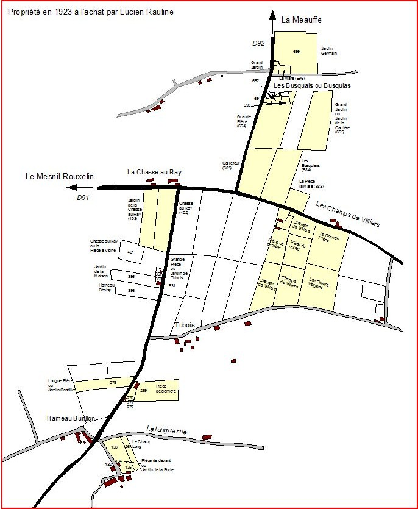
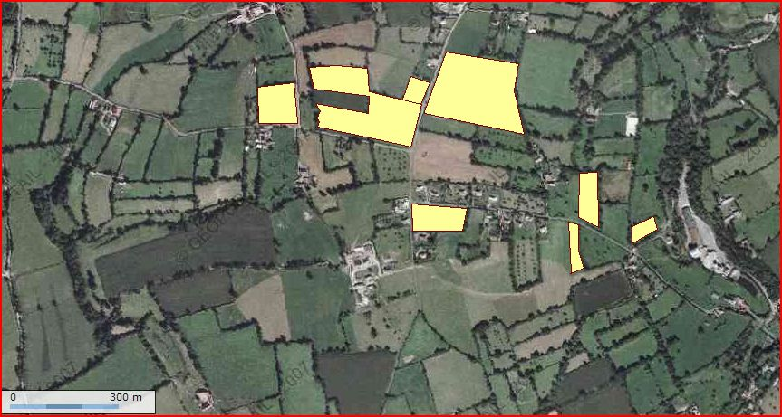

Achat Bréhin
Il semble que les autres documents du notariat, et en particulier ceux de l'achat par un Rauline, ont disparu au Débarquement. On ne sait donc pas précisément quand l'arrivée des Rauline
à Villiers a eu lieu.
On sait toutefois que Louis Rauline (le père, ou plutôt le mari de la mère du grand-père Rauline,
puisqu'il n'était pas son père, mais l'avait seulement
reconnu) habitait Villiers dès 1903.
En effet, sur le registre matricule du grand-père Rauline, en 1903, ses parents sont déclarés être domiciliés à Villiers.
En 1904, Louis Rauline est aussi témoin d'un mariage à Saint-Georges-Montcocq, celui de Victor Paris, de la Meurie à Saint-Georges, avec Marie Louise Hulmel, une nièce de sa femme Célestine Hulmel.
On sait aussi que l'oncle Gustave (celui décédé
lors de la Première Guerre Mondiale en 1918), enfant de Louis Rauline et Célestine Hulmel est né en 1892 à Saint-Ebremond-de-Bonfossé.
Les Rauline sont donc arrivés entre 1892 et 1903 à Villiers. Rien ne montre qu'il s'agit bien des Champs de Villiers, mais Louis Rauline y décède le 9 janvier 1922. C'est donc très probablement aux Champs de Villiers.
La matrice cadastrale confirme ces dates, et permet peut-être de
les préciser. On y apprend qu'en 1913, les Champs de Villiers
appartiennent à Jules Edmond Lebatteux.
L'ensemble de la ferme contient 11 hectares 13 ares 86 centiares
(couleur jaune sur le plan). Tous les terrains ont été
cités dans les actes Bréhin : en plus des Champs de
Villiers, il y a la Chasse au Ray, les Busquias, le Hameau Burillon, le
Jardin Castillon.
Puis, il est indiqué comme propriétaire, avec la date de 1923, Lucien Rauline. Avant cette date, le grand-père et la grand-mère Rauline (Lucien Rauline et Marie Cochard) habitaient à Condé-sur-Vire car la tante Lucienne y est née en 1920.
Les Rauline sont donc arrivés à Villiers vers 1900,
tout d'abord comme locataires de Jules Lebatteux. Puis, après le
décès de son père, le grand-père Rauline
a acheté en 1923 la ferme à Jules Edmond Lebatteux. Il
faut noter, que contrairement à ce que disait Mamie, la Chasse
au Ray a été achetée en même temps que les
Champs de Villiers, ce qui par contre n'est pas le cas de la maison de
Mamie, et donc de celle de Guillaume.


dernière modification : 8 décembre 2014